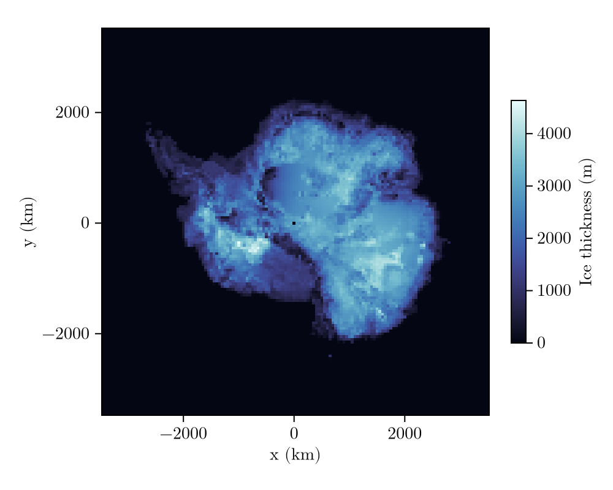
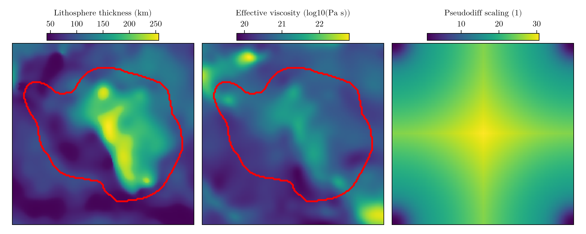
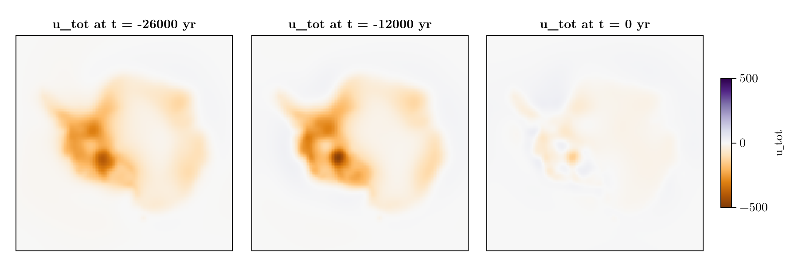
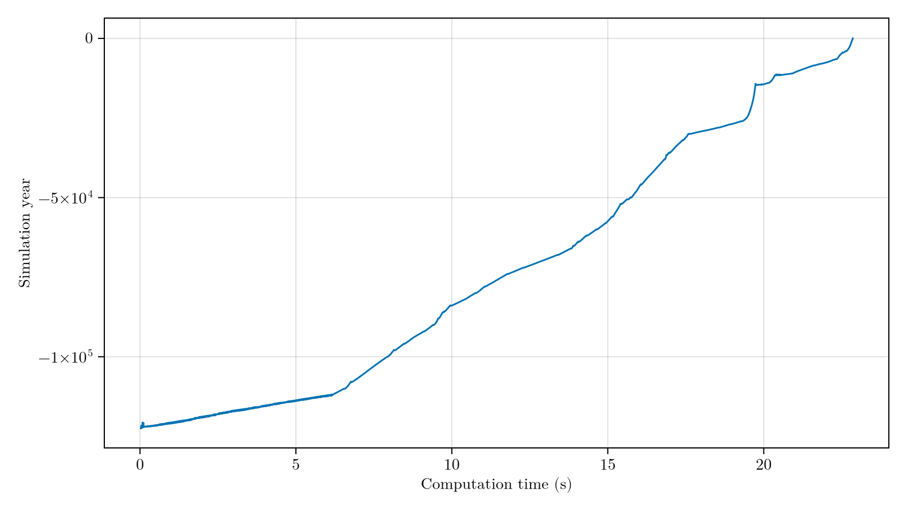

Glacial cycle
The previous examples focused on benchmarking FastIsostasy against analytical, numerical 1D and numerical 3D solutions. However, these cases were largely idealised. To test the model on more realistic simulations, we now provide compute the GIA response in Antarctica over the last glacial cycle. This includes the use of:
- a heterogeneous lithosphere thickness (Pan et al., 2022),
- a heterogeneous upper-mantle viscosity (Pan et al., 2022),
- a stack of few viscous channels,
- a more elaborate load that evolves over time (Peltier et al., 2018),
- transient changes of the relative sea-level.
We start by generating a RegionalDomain with intermediate resolution for the sake of the example and load the ice history thanks to the convenience of load_dataset. To get an idea of the ICE6G forcing, the ice thickness is visualised at the last glacial maximum (LGM):
using CairoMakie, FastIsostasy, Statistics
N = 140
domain = RegionalDomain(3500e3, 3500e3, N, N) # resolution = 50 km
Lon, Lat = domain.Lon, domain.Lat
(_, _, t), Hice, Hitp = load_dataset("ICE6G_D")
Hice_vec = [Hitp.(Lon, Lat, tk) for tk in t]
k_lgm = argmax([mean(Hice_vec[k]) for k in eachindex(Hice_vec)])
plot_load(domain, Hice_vec[k_lgm])
This already looks like a much more exciting ice thickness field! Here again, the ice history is wrapped into an interpolator, which is passed to an instance of BoundaryConditions. We define the RegionalSeaLevel to include the gravitational response by making the surface a LaterallyVariableSeaSurface. Furthermore, we allow the changes in sea level to affect the deformational response of the solid Earth by setting InteractiveSealevelLoad. Finally, we compute the evolution of the barystatic sea level (BSL) according to a piece-wise constant approximation of the ocean surface as a function of the BSL:
it = TimeInterpolatedIceThickness(t .* 1e3, Hice_vec, domain)
bcs = BoundaryConditions(domain, ice_thickness = it)
sealevel = RegionalSeaLevel(
surface = LaterallyVariableSeaSurface(),
load = InteractiveSealevelLoad(),
bsl = PiecewiseConstantBSL(),
) Sea surface: LaterallyVariableSeaSurface
Sea-level load: InteractiveSealevelLoad
Barystatic sea level: PiecewiseConstantBSL{Float32, ReferenceBSL{Float32, TimeInterpolation0D{Float32}}}
BSL update: InternalBSLUpdate
Volume contribution: GoelzerVolumeContribution
Density contribution: GoelzerDensityContribution
Adjustment contribution: NoAdjustmentContribution
Finally, we load the interpolators of earth structure thanks to the convenience function load_dataset.
(_, _), Tpan, Titp = load_dataset("Lithothickness_Pan2022")
Tlitho = Titp.(Lon, Lat) .* 1e3 # convert from km to m
(_, _, _), _, logeta_itp = load_dataset("Viscosity_Pan2022");returning: (lon180, lat), Tlitho, interpolator
returning: (lon180, lat, r), eta (in log10 space), interpolatorThe number of layers and the depth of viscous half-space are arbitrary parameters that have to be defined by the user. We here use a relatively shallow model (half-space begins at $300 \, \mathrm{km}$ depth) with 1 equalisation layer and 3 intermediate layers.
mindepth = maximum(Tlitho) + 1e3
layerboundary_vec = range(mindepth, stop = 300e3, length = 3)
lb = cat(Tlitho, [fill(lbval, domain.nx, domain.ny)
for lbval in layerboundary_vec]..., dims=3)
rlb = 6371e3 .- lb
nlb = size(rlb, 3)
lv_3D = 10 .^ cat([logeta_itp.(Lon, Lat, rlb[:, :, k]) for k in 1:nlb]..., dims=3)
eta_lowerbound = 1e16
lv_3D[lv_3D .< eta_lowerbound] .= eta_lowerbound
maskactive = gaussian_smooth(Hice_vec[k_lgm], domain, 0.05, 0) .> 10
solidearth = SolidEarth(
domain,
layer_boundaries = lb,
layer_viscosities = lv_3D,
maskactive = maskactive, # required when using InteractiveSealevelLoad
)
fig = plot_earth(domain, solidearth)
This already looks like a much more exciting solid Earth structure!
Finally, we define the output struct, the Simulation and run! it.
nout = NativeOutput(vars = [:u, :ue, :dz_ss, :z_ss, :H_ice], t = [-26f3, -12f3, 0])
sim = Simulation(domain, bcs, sealevel, solidearth, extrema(it.t_vec); nout = nout)
run!(sim)
copts = (colormap = :PuOr, colorrange = (-500, 500))
fig = plot_out_over_time(sim, :u_tot, [-26e3, -12e3, 0], copts)
This looks very much like what is obtained by Seakon (Swierczek-Jereczek et al. (2024), Fig.9.g), a 3D GIA model. We can have a look at the evolution of the computation time as well:
fig = plot_computation_time(sim)
Copy-pastable code
using FastIsostasy, CairoMakie, Statistics
N = 140
domain = RegionalDomain(3500e3, 3500e3, N, N) # 50 km resolution
Lon, Lat = domain.Lon, domain.Lat
# ice history (ICE6G_D)
(_, _, t), _, Hitp = load_dataset("ICE6G_D")
Hice_vec = [Hitp.(Lon, Lat, tk) for tk in t]
k_lgm = argmax([mean(H) for H in Hice_vec])
it = TimeInterpolatedIceThickness(t .* 1e3, Hice_vec, domain)
bcs = BoundaryConditions(domain, ice_thickness = it)
# gravitationally consistent, interactive sea level
sealevel = RegionalSeaLevel(surface = LaterallyVariableSeaSurface(),
load = InteractiveSealevelLoad(), bsl = PiecewiseConstantBSL())
# laterally variable Earth structure (Pan et al., 2022)
(_, _), _, Titp = load_dataset("Lithothickness_Pan2022")
Tlitho = Titp.(Lon, Lat) .* 1e3
(_, _, _), _, logeta_itp = load_dataset("Viscosity_Pan2022")
layerboundary_vec = range(maximum(Tlitho) + 1e3, stop = 300e3, length = 3)
lb = cat(Tlitho, [fill(v, N, N) for v in layerboundary_vec]..., dims = 3)
rlb = 6371e3 .- lb
lv_3D = 10 .^ cat([logeta_itp.(Lon, Lat, rlb[:, :, k]) for k in 1:size(rlb, 3)]...,
dims = 3)
lv_3D[lv_3D .< 1e16] .= 1e16
solidearth = SolidEarth(domain,
layer_boundaries = lb, layer_viscosities = lv_3D,
maskactive = gaussian_smooth(Hice_vec[k_lgm], domain, 0.05, 0) .> 10)
nout = NativeOutput(vars = [:u, :ue, :dz_ss, :z_ss, :H_ice], t = [-26f3, -12f3, 0])
sim = Simulation(domain, bcs, sealevel, solidearth, extrema(it.t_vec); nout = nout)
run!(sim)
plot_out_over_time(sim, :u_tot, [-26e3, -12e3, 0],
(colormap = :PuOr, colorrange = (-500, 500)))